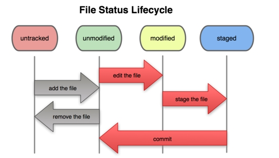
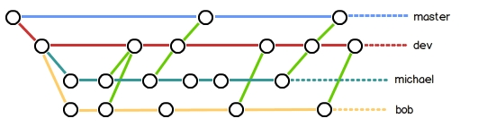

创建版本库
什么是版本库呢？
版本库又名仓库，英文名repository，可以简单理解成一个目录，这个目录里面的所有文件都可以被Git管理起来，每个文件的修改、删除，Git都能跟踪，以便任何时刻都可以追踪历史，或者在将来某个时刻可以“还原”。
创建一个版本库
首先，选择一个合适的地方，创建一个空目录。
打开 Git Bash：
1 | $ mkdir public 创建一个目录 |
第二步，通过 git init 命令把这个目录变成 Git 可以管理的仓库。
1 | $ git init |
把文件添加到版本库
第一步，用命令 git add 告诉Git，把文件添加到仓库：
可反复多次使用，添加多个文件
1 | $ git add * 一次性添加这个文件夹下所有的文件到仓库 |
执行上面的命令，没有任何显示，说明添加成功。
工作目录下面的所有文件都不外乎这两种状态：已跟踪或未跟踪。
已跟踪的文件：是指本来就被纳入版本控制管理的文件，在上次快照中有它们的记录，工作一段时间后，它们的状态可能是 未更新，已修改或者已放入暂存区。
而所有其他文件都属于未跟踪文件。它们既没有上次更新时的快照，也不在当前的暂存区域。
初次克隆某个仓库时，工作目录中的所有文件都属于已跟踪文件，且状态为未修改。

检查当前文件状态
要确定哪些文件当前处于什么状态，可以用 git status 命令。
1 | On branch master |
已跟踪文件的内容发生了变化，但还没有放到暂存区。要暂存这次更新，需要运行 git add 命令（这是个多功能命令，根据目标文件的状态不同，此命令的效果也不同：可以用它开始跟踪新文件，或者把已跟踪的文件放到暂存区，还能用于合并时把有冲突的文件标记为已解决状态等）。
查看已暂存和未暂存的更新
git diff 命令可以查看具体修改了文件的哪些地方。
不加参数直接输入 git diff，此命令比较的是工作目录中当前文件和暂存区域快照之间的差异，也就是修改之后还没有暂存起来的变化内容。
若要看已经暂存起来的文件和上次提交时的快照之间的差异，可以用 git diff --cached 命令。（Git 1.6.1 及更高版本还允许使用 git diff --staged，效果是相同的，但更好记些。）
1 | $ git diff |
提交更新
用命令 git commit 告诉Git，把文件提交到仓库：
1 | $ git commit -m "输入的是本次提交的说明，可以输入任意内容" |
git commit 命令执行成功后会告诉你，什么文件被改动过了。
跳过使用暂存区域
Git 提供了一个跳过使用暂存区域的方式，只要在提交的时候，给 git commit 加上 -a 选项，Git 就会自动把所有已经跟踪过的文件暂存起来一并提交，从而跳过 git add 步骤
版本穿梭
查看提交历史
git log 命令显示从最近到最远的提交日志
如果嫌输出信息太多，看得眼花缭乱的，可以试试加上 --pretty=oneline 参数
1 | $ git log |
一大串类似3628164...882e1e0的是commit id（版本号）
穿梭过去
在Git中，用HEAD表示当前版本，也就是最新的提交，上一个版本就是HEAD^，上上一个版本就是HEAD^^，当然往上100个版本写100个^比较容易数不过来，所以写成HEAD~100。
把当前版本回退到上一个版本，就可以使用git reset命令：
1 | $ git reset --hard HEAD^ |
回到未来
周星驰《上海滩赌圣》里面的一个梗，在这里就可以用上：“穿梭过去，回到未来！”
以指定回到未来的某个版本:
1 | $ git reset --hard 123456 <!-- commit id --> |
用git reflog查看命令历史，以便确定要回到未来的哪个版本。
1 | $ git reflog |
撤销修改
情况一
git checkout -- fileName可以丢弃工作区的修改：
命令git checkout -- fileName意思就是，把fileName文件在工作区的修改全部撤销，这里有两种情况：
一种是fileName自修改后还没有被放到暂存区，现在，撤销修改就回到和版本库一模一样的状态；
一种是fileName已经添加到暂存区后，又作了修改，现在，撤销修改就回到添加到暂存区后的状态。
总之，就是让这个文件回到最近一次git commit或git add时的状态。
情况二
在commit之前，你发现了这个问题。用git status查看一下，修改只是添加到了暂存区，还没有提交：
用命令git reset HEAD file可以把暂存区的修改撤销掉（unstage），重新放回工作区：
1 | $ git reset HEAD fileName |
删除文件
Git知道你删除了文件，因此，工作区和版本库就不一致了，git status命令会立刻告诉你哪些文件被删除了：
选择一：删除文件
确实要从版本库中删除该文件，那就用命令git rm删掉，并且git commit
1 | $ git rm fileName |
选择二：
把误删的文件恢复到最新版本
1 | $ git checkout -- fileName |
git checkout 其实是用版本库里的版本替换工作区的版本，无论工作区是修改还是删除，都可以“一键还原”。
远程仓库
添加远程仓库
远程仓库是指托管在网络上的项目仓库，可能会有好多个，其中有些你只能读，另外有些可以写。同他人协作开发某个项目时，需要管理这些远程仓库，以便推送或拉取数据，分享各自的工作进展。管理远程仓库的工作，包括添加远程库，移除废弃的远程库，管理各式远程库分支，定义是否跟踪这些分支，等等。
要添加一个新的远程仓库，可以指定一个简单的名字，以便将来引用，运行 git remote add [shortname] [url]：
1 | $ git remote add shortname url |
下一步，就可以把本地库的所有内容推送到远程库上：
1 | $ git push -u origin master |
第一次推送master分支时，加上了-u参数，Git不但会把本地的master分支内容推送的远程新的master分支，还会把本地的master分支和远程的master分支关联起来，在以后的推送或者拉取时就可以简化命令。
第二次推送开始，就可以简化命令：
1 | $ git push origin master |
把本地master分支的最新修改推送至GitHub，现在，就拥有了真正的分布式版本库！
从远程库克隆
要克隆一个仓库，首先必须知道仓库的地址，然后使用git clone命令克隆
1 | $ git clone url |
分支管理
现在有了分支，就不用怕了。你创建了一个属于你自己的分支，别人看不到，还继续在原来的分支上正常工作，而你在自己的分支上干活，想提交就提交，直到开发完毕后，再一次性合并到原来的分支上，这样，既安全，又不影响别人工作。
创建与合并分支
查看分支：git branch
创建分支：git branch <name>
切换分支：git checkout <name>
创建+切换分支：git checkout -b <name>
合并某分支到当前分支：git merge <name>
删除分支：git branch -d <name>
解决冲突
合并产生冲突的时候，必须手动解决冲突之后再提交。
1 | $ git merge feature1 |
git status 可以告诉我们冲突的文件：
1 | $ git status |
可以直接查看冲突文件的内容：
1 | Git is a distributed version control system. |
Git用<<<<<<<，=======，>>>>>>>标记出不同分支的内容。
修改之后，保存,add commit:
1 | $ git add fileName |
用带参数的 git log 也可以看到分支的合并情况
1 | $ git log --graph --pretty=oneline --abbrev-commit |
最后删除分支，工作完成！
分支管理策略
通常，合并分支时，如果可能，Git会用Fast forward模式，但这种模式下，删除分支后，会丢掉分支信息。
如果要强制禁用Fast forward模式，Git就会在merge时生成一个新的commit，这样，从分支历史上就可以看出分支信息。
--no-ff参数，表示禁用Fast forward
1 | $ git merge --no-ff -m "merge with no-ff" dev |
因为本次合并要创建一个新的commit，所以加上-m参数，把commit描述写进去。
分支策略
在实际开发中，我们应该按照几个基本原则进行分支管理：
master分支应该是非常稳定的，也就是仅用来发布新版本，平时不能在上面干活- 干活都在
dev分支上，也就是说，dev分支是不稳定的，到某个时候，比如1.0版本发布时，再把dev分支合并到master上，在master分支发布1.0版本； - 你和你的小伙伴们每个人都在
dev分支上干活，每个人都有自己的分支，时不时地往dev分支上合并就可以了。

Bug分支
有了bug就需要修复，在Git中，由于分支是如此的强大，所以，每个bug都可以通过一个新的临时分支来修复，修复后，合并分支，然后将临时分支删除。
Git还提供了一个stash功能，可以把当前工作现场“储藏”起来，等以后恢复现场后继续工作：
1 | $ git stash |
现在，用git status查看工作区，就是干净的（除非有没有被Git管理的文件），因此可以放心地创建分支来修复bug。
首先确定要在哪个分支上修复bug，假定需要在master分支上修复，就从master创建临时分支：
1 | $ git checkout master |
现在修复bug，然后提交：
1 | $ git add readme.txt |
修复完成后，切换到master分支，并完成合并，最后删除issue-101分支：
1 | $ git checkout master |
现在，是时候接着回到dev分支干活了！
1 | $ git checkout dev |
工作区是干净的，刚才的工作现场存到哪去了？用git stash list命令看看：
1 | $ git stash list |
工作现场还在，Git把stash内容存在某个地方了，但是需要恢复一下，有两个办法：
- 一是用
git stash apply恢复，但是恢复后，stash内容并不删除，你需要用git stash drop来删除； - 另一种方式是用git stash pop，恢复的同时把stash内容也删了：
1 | $ git stash pop |
再用git stash list查看，就看不到任何stash内容了：
你可以多次stash，恢复的时候，先用git stash list查看，然后恢复指定的stash，用命令：
1 | $ git stash apply stash@{0} |
Feature分支
添加一个新功能时，你肯定不希望因为一些实验性质的代码，把主分支搞乱了，所以，每添加一个新功能，最好新建一个feature分支，在上面开发，完成后，合并，最后，删除该feature分支。
一切顺利的话，feature分支和bug分支是类似的，合并，然后删除。
但是，
就在此时，接到上级命令，因经费不足，新功能必须取消！
虽然白干了，但是这个分支还是必须就地销毁：
1 | $ git branch -d feature-vulcan |
销毁失败。Git友情提醒，feature-vulcan分支还没有被合并，如果删除，将丢失掉修改，如果要强行删除，需要使用命令git branch -D feature-vulcan。
现在我们强行删除
1 | $ git branch -D feature-vulcan |
多人协作
当你从远程仓库克隆时，实际上Git自动把本地的master分支和远程的master分支对应起来了，并且，远程仓库的默认名称是origin。
要查看远程库的信息，用git remote：
1 | $ git remote |
或者，用git remote -v显示更详细的信息：
1 | $ git remote -v |
显示了可以抓取和推送的origin的地址。如果没有推送权限，就看不到push的地址。
推送分支
推送分支，就是把该分支上的所有本地提交推送到远程库。
推送时，要指定本地分支，这样，Git就会把该分支推送到远程库对应的远程分支上：
1 | $ git push origin master |
如果要推送其他分支，比如dev，就改成：
1 | $ git push origin dev |
但是，并不是一定要把本地分支往远程推送，那么，哪些分支需要推送，哪些不需要呢？
master分支是主分支，因此要时刻与远程同步；dev分支是开发分支，团队所有成员都需要在上面工作，所以也需要与远程同步；bug分支只用于在本地修复bug，就没必要推到远程了，除非老板要看看你每周到底修复了几个bug；feature分支是否推到远程，取决于你是否和你的小伙伴合作在上面开发。
抓取分支
多人协作时，大家都会往master和dev分支上推送各自的修改。
现在，模拟一个小伙伴，可以在另一台电脑（注意要把SSH Key添加到GitHub）或者同一台电脑的另一个目录下克隆：
1 | $ git clone git@github.com:michaelliao/learngit.git |
当小伙伴从远程库clone时，默认情况下，小伙伴只能看到本地的master分支，可以用git branch命令看看：
1 | $ git branch |
现在，小伙伴要在dev分支上开发，就必须创建远程origin的dev分支到本地，于是他用这个命令创建本地dev分支：
1 | $ git checkout -b dev origin/dev |
你的小伙伴已经向origin/dev分支推送了他的提交，而碰巧你也对同样的文件作了修改，并试图推送:
推送失败，因为你的小伙伴的最新提交和你试图推送的提交有冲突，解决办法也很简单，Git已经提示我们，先用git pull把最新的提交从origin/dev抓下来，然后，在本地合并，解决冲突，再推送：
1 | $ git pull |
如果 git pull也失败了，原因是没有指定本地dev分支与远程origin/dev分支的链接，根据提示，设置dev和origin/dev的链接：
1 | $ git branch --set-upstream dev origin/dev |
再pull：
1 | $ git pull |
这回git pull成功，但是合并有冲突，需要手动解决，解决的方法和分支管理中的解决冲突完全一样。解决后，提交，再push：
因此，多人协作的工作模式通常是这样：
首先，可以试图用git push origin branch-name推送自己的修改；
如果推送失败，则因为远程分支比你的本地更新，需要先用git pull试图合并；
如果合并有冲突，则解决冲突，并在本地提交；
没有冲突或者解决掉冲突后，再用git push origin branch-name推送就能成功！
如果git pull提示“no tracking information”，则说明本地分支和远程分支的链接关系没有创建，用命令git branch --set-upstream branch-name origin/branch-name。
这就是多人协作的工作模式，一旦熟悉了，就非常简单。